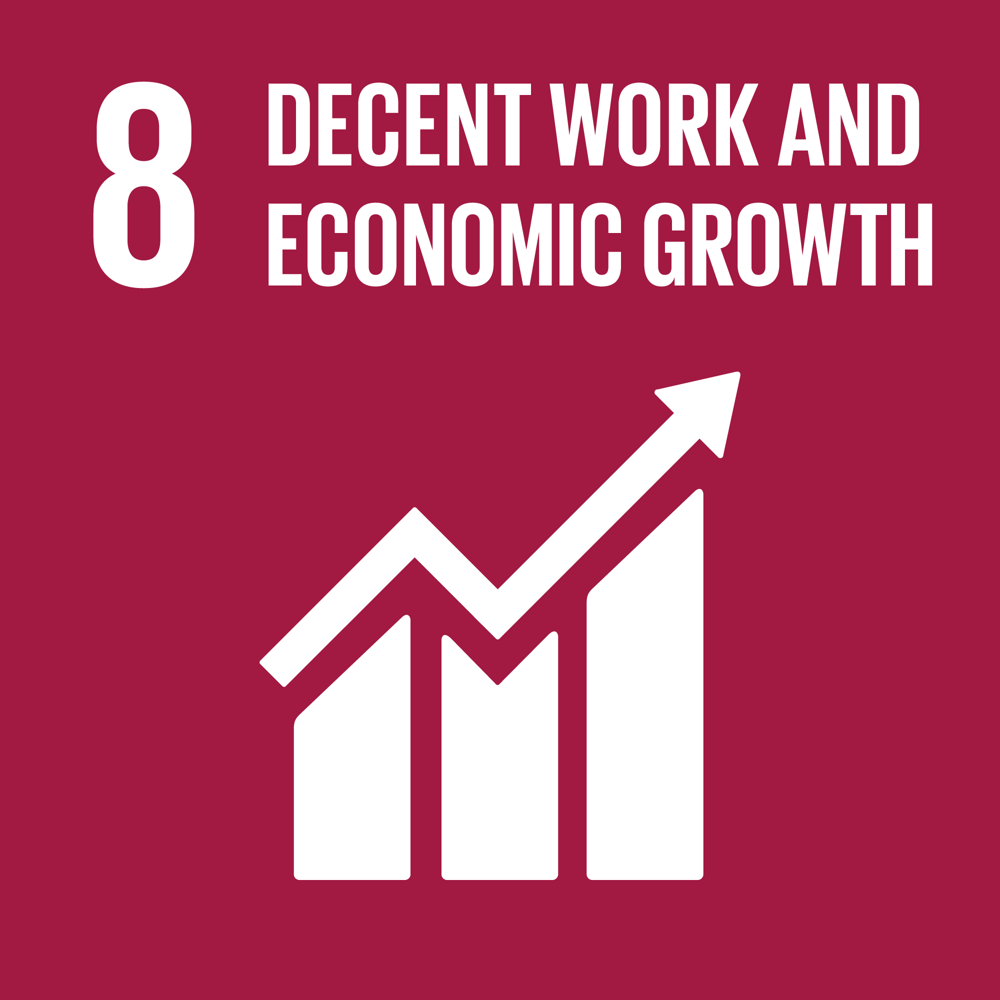
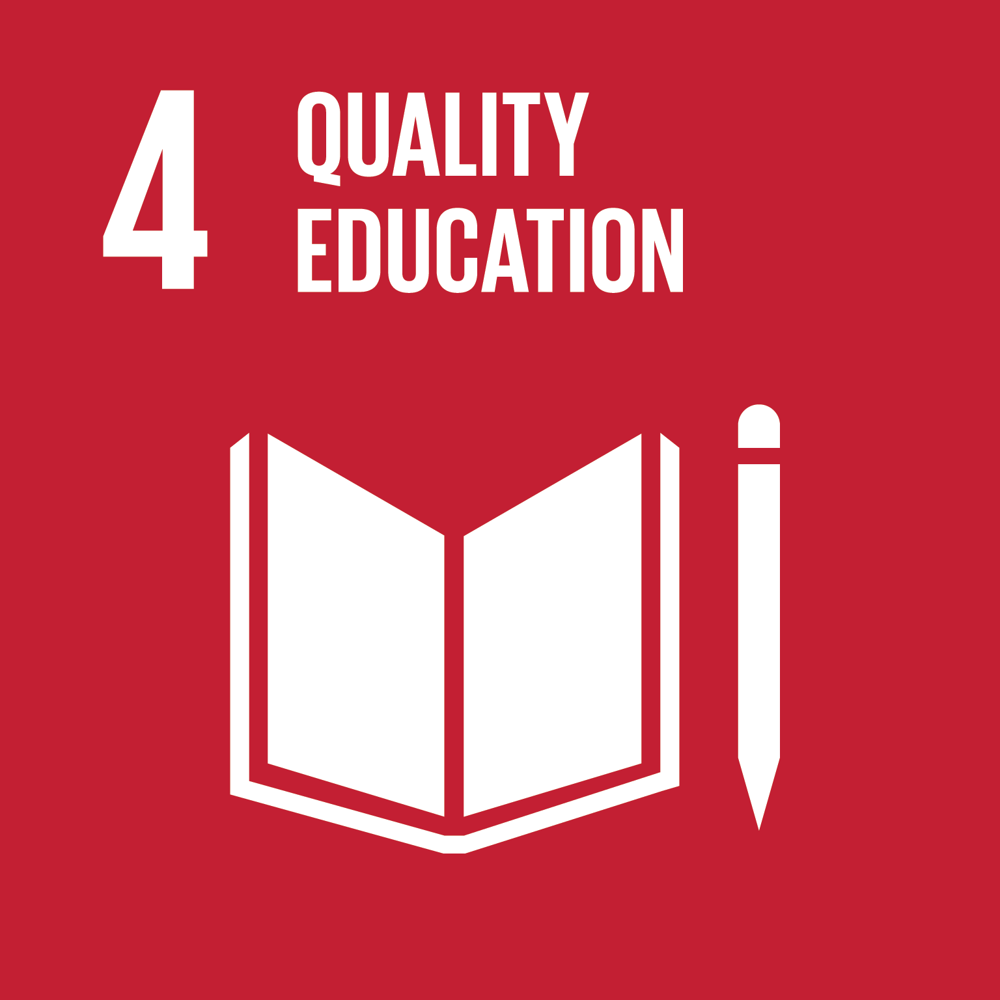

The 17 Sustainable Development Goals
Developed in 2015 to by the United Nations, in order to share a blueprint for peace and prosperity
for the people and the planet
What is the 17 SDGs
The 2030 Agenda for Sustainable Development, that was adopted by all United Nations Member States in 2015, aiming to a more peaceful and prosper world for its people.
It was resumed to 17 main goals, as an example of:

No Poverty
This topic focus on how to progress towards an eradication of extreme poverty:
Keeping track of Global Status, 1 in 10 people still in extreme poverty
United Nations progress and pointing at Critical Risk Regions, such as Sub-Sahara Africa, Middle East and North Africa, and Oceania.
No Poverty
This topic focus on how to progress towards an eradication of extreme poverty:
Keeping track of Global Status, 1 in 10 people still in extreme poverty
United Nations progress and pointing at Critical Risk Regions, such as Sub-Sahara Africa, Middle East and North Africa, and Oceania.
No Poverty
This topic focus on how to progress towards an eradication of extreme poverty:
Keeping track of Global Status, 1 in 10 people still in extreme poverty
United Nations progress and pointing at Critical Risk Regions, such as Sub-Sahara Africa, Middle East and North Africa, and Oceania.
Decent Work and Economic Growth

This topic focus on how to progress towards an eradication of extreme poverty:
Keeping track of Global Status, 1 in 10 people still in extreme poverty
United Nations progress and pointing at Critical Risk Regions, such as Sub-Sahara Africa, Middle East and North Africa, and Oceania.
This is just a small part of what is the 17 SDG main mission, but in our point of view, what wraps everything and make all of these ideas possible, is Education.
Quality Education

According to the 2024 SDG report on Quality Education, since 2015 when it was implemented, there was an increase of 3% on Primary School, from 85% to 88%, Lower Secondary School had as well a 3% increase, from 75% to 78%, and the Upper Secondary School had an increase of 8%, from 53% to 61%.
But yet 273 MILLION children and young people remained out of school